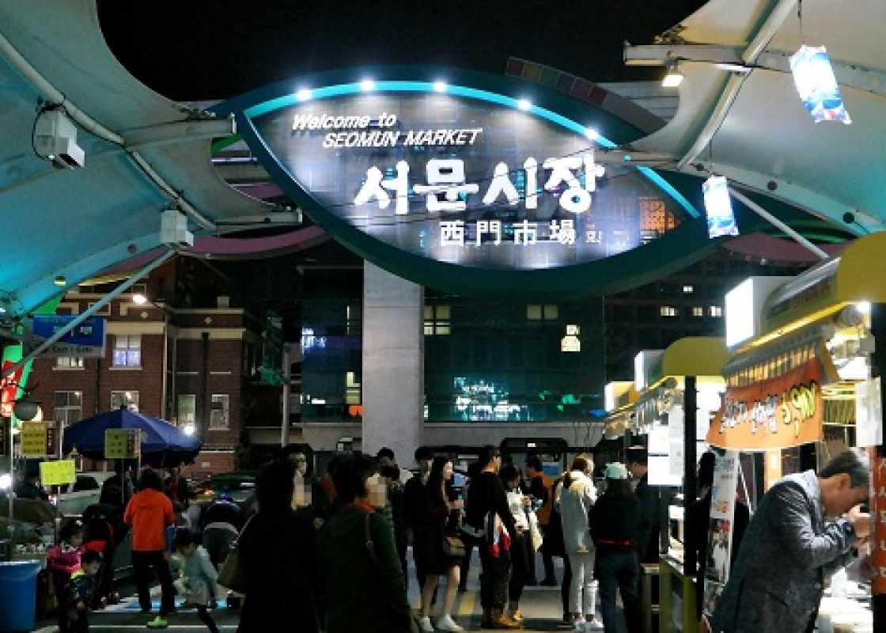

도시들
-

서울
서울특별시는 대한민국의 수도이자 최대도시이다. 또한 평양, 경주와 함께 오랜 역사를 가진 한반도의 도시 중 하나이다.
-

부산
대한민국 제2의 도시이자 대한민국 최초의 직할시 · 광역시이고 국내 최대국제무역항이 있는 제1의 항구도시, 경상권 최대도시, 제1의 해양교통과...
-

포항
경상북도 동남부에 위치한 시. 동쪽으로는 동해와 맞닿아있고, 서쪽으로는 영천시, 남쪽으로는 경주시, 북쪽으로는 청송군, 영덕군과 접해있다.
-

인천
한반도 중서부, 남한 최북서단에 위치하며, 서울특별시, 경기도와 함께 수도권을 형성하는 대한민국의 광역자치단체
-

대구
경상도의 중앙에 있는 광역자치단체. 대경권을 대표하는 대도시이자 대구권과 대경권의 최대도시다.
-

제주
대한민국의 남서쪽에 있는 섬. 행정구역 상 광역자치단체인 제주특별자치도의 관할. 한국의 섬 중에서 가장 크고 인구가 많은 섬으로 면적은...
관광명소
-

경복궁
경복궁은 조선 시대에 지어진 왕궁 중 가장 큰 궁궐이었다. 조선 왕조 개국3년인 1395년에 완공된 궁궐은 390여 칸으로 한양의 중심축에 자리했다.
위치 : 서울특별시 종로구 사직로 161 -

광안대교
부산광역시에 위치한 다리이며 부산광역시도 제66호선의 일부이다. 이 다리는 수영구 남천동 49호 광장과 해운대구 우동 센텀시티를 연결하는 대한민국 최대의 해상 복층 교량이다.
위치 : 부산광역시 남구 대연동 49호 광장 ~ 부산광역시 해운대구 우동 센텀시티 -
호미곶
경상북도 포항시 남구 호미곶면 장기반도 끝, 영일만을 이루면서 돌출한 곶. 대한민국 내륙에서 가장 해가 먼저 뜨는 곳으로 일출, 일몰 때를 맞추지 않더라도 포항까지 왔다면 꼭 한 번 들리면 좋은 장소다.
위치 : 경상북도 포항시 남구 호미곶면 장기반도 끝 -

인천국제공항
인천광역시 중구 공항로 272와 제2터미널대로 446에 위치한 대한민국의 중추공항이다.[10] 해외에서는 Seoul-Incheon International Airport(서울인천국제공항)이라 불리기도 한다.
위치 : 제1여객터미널 위치 : 인천광역시 중구 공항로 272 (운서동)
제2여객터미널 위치 : 인천광역시 중구 제2터미널대로 446 (운서동) -

대구서문시장
대구뿐만 아니라 전국에서도 손꼽힐 만한 대규모의 재래시장이다. 대구읍성 서문 밖에 있는 시장이라고 하여 서문시장이라는 명칭이 붙여졌다. 2016년 6월부터는 서문시장 야시장도 영업하고 있다.
위치 : 대구광역시 중구 큰장로 26길 (대신동) -

성산일출봉
제주도가 만들어진 시기인 신생대 제4기 플라이스토세에 단성화산인 오름과는 달리 유일하게 현무암질 마그마가 얕은 바닷속에서 분출하여 만들어진 수성화산의 일종인 응회구이자 섯시형화산체이다.
위치 : 제주특별자치도 서귀포시 성산읍 성산리